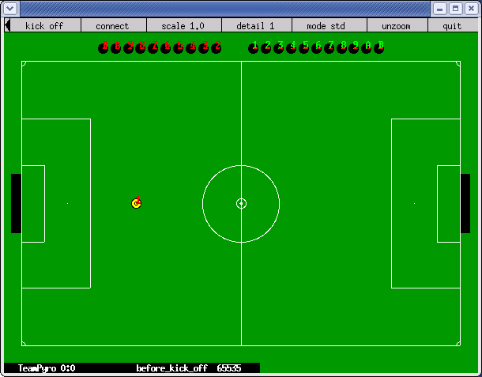
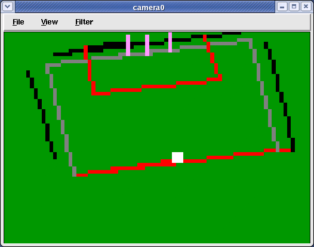

|
|||||||
| [ Home ] | [ Software ] | [ Curriculum ] | [ Hardware ] | [ Community ] | [ News ] | [ Publications ] | [ Search ] |
|
The Robocup SimulatorThe Robocup Simulator is a robot soccer (football) platform. It has been around for a few years. There are competitions each year for both the simulator, and real robots. There is even a humanoid robot league! You can read about it at the main Robocup website: Before you can use the Robocup Soccer Simulator, you will need to make sure you have an up-to-date version of Pyro. It should be at least 3.2.1. Also, you will need to have the Soccer Simulator installed at your site. For information on installing the software, please see RobocupSoccerInstallation.
Running Pyro with RobocupTo try a quick demo of the soccer simulator:
You should see something that looks like this:  Your robot is the yellow one on the field.
The Robocup Window
In the Robocup window you can left-click and drag an area on the field to zoom into it.
The Robocup Language
These robots are very different from any other robots that we have seen. These robots don't have sensors in the traditional sense. Instead, they have lists of landmarks, and distances to them. You will be able to figure out where each robot is by doing some calculations.
There are many things that each robot can do, including, kicking, catching, speaking, hearing and even turning their necks! To make things even more complex, you will also have to worry about stamina, power, acceleration, friction, and a host of other variables. First, let's look at the basics. You communicate with each robot by sending messages. To send a message to a robot you use the robot.sendMsg(MESSAGE) command. Messages take the form:
Other commands, which can be executed in tandom with other commands:
(change_view WIDTH QUALITY) (say MESSAGE) (sense_body) (score) (turn_neck ANGLE) (hear TIME SENDER MESSAGE) Sender: self, referee
StateYou can find information about the state of a robot or the game by looking at the attributes of the robot. Entering robot.printView() on the commandline or clicking on View on the Robot line in the main Pyro window shows something like:
devices/
truth0/
name = truth0
pose = (-50, 0)
type = truth
robot/
builtinDevices = ['truth']
goalie = True
hear = ['referee', 'drop_ball']
hear:time = 200
host = localhost
init = ['l', 1, 'before_kick_off']
name = TeamA
player_param = {'inertia_moment_delta_factor': 25,
'stamina_inc_max_delta_factor': 0,
'player_types': 7, 'effort_min_delta_factor': -0.002, 'kickable_margin_delta_min': 0,
'player_speed_max_delta_min': 0, 'new_dash_power_rate_delta_max': 0.002,
'player_decay_delta_max': 0.20000000000000001, 'player_speed_max_delta_max': 0,
'new_stamina_inc_max_delta_factor': -10000.0, 'effort_max_delta_factor': -0.002,
'extra_stamina_delta_min': 0, 'extra_stamina_delta_max': 100, 'random_seed': -1.0,
'player_decay_delta_min': 0, 'pt_max': 3, 'dash_power_rate_delta_min': 0,
'dash_power_rate_delta_max': 0, 'new_dash_power_rate_delta_min': 0,
'player_size_delta_factor': -100.0, 'kickable_margin_delta_max': 0.20000000000000001,
'subs_max': 3, 'kick_rand_delta_factor': 0.5}
player_type:0 = {'effort_max': 1, 'kickable_margin': 0.69999999999999996, 'extra_stamina': 0,
'player_size': 0.29999999999999999, 'player_decay': 0.40000000000000002,
'player_speed_max': 1.2, 'kick_rand': 0, 'dash_power_rate': 0.0060000000000000001,
'effort_min': 0.59999999999999998, 'stamina_inc_max': 45, 'inertia_moment': 5}
player_type:1 = {'effort_max': 0.99860000000000004, 'kickable_margin': 0.84219999999999995,
'extra_stamina': 0.69999999999999996, 'player_size': 0.29999999999999999,
'player_decay': 0.55200000000000005, 'player_speed_max': 1.2,
'kick_rand': 0.071099999999999997, 'dash_power_rate': 0.0060179999999999999,
'effort_min': 0.59860000000000002, 'stamina_inc_max': 44.82,
'inertia_moment': 8.8000000000000007}
player_type:2 = {'effort_max': 0.80740000000000001, 'kickable_margin': 0.89780000000000004,
'extra_stamina': 96.299999999999997, 'player_size': 0.29999999999999999,
'player_decay': 0.53239999999999998, 'player_speed_max': 1.2,
'kick_rand': 0.098900000000000002, 'dash_power_rate': 0.0076680000000000003,
'effort_min': 0.40739999999999998, 'stamina_inc_max': 28.32,
'inertia_moment': 8.3100000000000005}
player_type:3 = {'effort_max': 0.81779999999999997, 'kickable_margin': 0.75560000000000005,
'extra_stamina': 91.099999999999994, 'player_size': 0.29999999999999999,
'player_decay': 0.53920000000000001, 'player_speed_max': 1.2,
'kick_rand': 0.027799999999999998, 'dash_power_rate': 0.0061919999999999996,
'effort_min': 0.4178, 'stamina_inc_max': 43.079999999999998,
'inertia_moment': 8.4800000000000004}
player_type:4 = {'effort_max': 0.89800000000000002, 'kickable_margin': 0.71160000000000001,
'extra_stamina': 51, 'player_size': 0.29999999999999999,
'player_decay': 0.55200000000000005, 'player_speed_max': 1.2,
'kick_rand': 0.0057999999999999996, 'dash_power_rate': 0.0067219999999999997,
'effort_min': 0.498, 'stamina_inc_max': 37.780000000000001,
'inertia_moment': 8.8000000000000007}
player_type:5 = {'effort_max': 0.86360000000000003, 'kickable_margin': 0.8054,
'extra_stamina': 68.200000000000003, 'player_size': 0.29999999999999999,
'player_decay': 0.443, 'player_speed_max': 1.2, 'kick_rand': 0.052699999999999997,
'dash_power_rate': 0.0061159999999999999, 'effort_min': 0.46360000000000001,
'stamina_inc_max': 43.840000000000003, 'inertia_moment': 6.0750000000000002}
player_type:6 = {'effort_max': 0.83999999999999997, 'kickable_margin': 0.74860000000000004,
'extra_stamina': 80, 'player_size': 0.29999999999999999,
'player_decay': 0.51719999999999999, 'player_speed_max': 1.2,
'kick_rand': 0.024299999999999999, 'dash_power_rate': 0.0066880000000000004,
'effort_min': 0.44, 'stamina_inc_max': 38.119999999999997,
'inertia_moment': 7.9299999999999997}
port = 6000
see = [[['f', 'g', 'l', 'b'], 25.800000000000001, -29.0],
[['g', 'l'], 23.800000000000001, -13.0, -0.0, 0],
[['f', 'g', 'l', 't'], 23.600000000000001, 4, -0.0, 0],
[['f', 'p', 'l', 'c'], 7.7999999999999998, -33.0, -0.0, -0.0],
[['f', 'l', 0], 28.800000000000001, -12.0, -0.0, 0],
[['f', 'l', 't', 10], 29.100000000000001, 8],
[['f', 'l', 't', 20], 32.799999999999997, 26, -0.0, 0],
[['f', 'l', 't', 30], 38.5, 39],
[['f', 'l', 'b', 10], 31.5, -30.0],
[['f', 'l', 'b', 20], 37, -44.0],
[['p', '"TeamA"', 5], 18.199999999999999, -34.0, -0.0, -0.0, 176, 176],
[['p', '"TeamA"', 9], 11, -45.0, -0.0, -0.0, 176, 176],
[['l', 'l'], 23.600000000000001, 86]]
see:time = 1138
sense_body = {'head_angle': 0, 'dash': 530, 'change_view': 0, 'turn_neck': 0, 'move': 2, 'say': 0,
'focus': ['target', 'none'], 'stamina': 2925, 'turn': 99, 'view_mode': 'high',
'tackle': ['expires', 0], 'catch': 0, 'speed': 0, 'arm': ['movable', 0], 'kick': 0}
sense_body:time = 1140
server_param = {'say_msg_size': 10, 'keepaway_log_dir': '"./"', 'coach': 0, 'nr_normal_halfs': 2,
'kick_rand_factor_l': 1, 'effort_dec': 0.0050000000000000001, 'synch_mode': 0,
'fullstate_l': 0, 'forbid_kick_off_offside': 1, 'fullstate_r': 0, 'kick_power_rate': 0.027,
'catchable_area_w': 1, 'back_passes': 1, 'synch_micro_sleep': 1,
'player_rand': 0.10000000000000001, 'keepaway': 0, 'stamina_inc_max': 45,
'kick_rand_factor_r': 1, 'effort_dec_thr': 0.29999999999999999, 'maxneckang': 90,
'prand_factor_l': 1, 'text_logging': 1, 'visible_angle': 90, 'hear_decay': 1,
'text_log_fixed_name': '"rcssserver"', 'clang_del_win': 1, 'prand_factor_r': 1,
'recover_dec_thr': 0.29999999999999999, 'synch_offset': 60, 'freeform_send_period': 20,
'text_log_compression': 0, 'catchable_area_l': 2, 'clang_win_size': 300, 'recv_step': 10,
'ball_accel_max': 2.7000000000000002, 'effort_inc_thr': 0.59999999999999998,
'player_size': 0.29999999999999999, 'dash_power_rate': 0.0060000000000000001,
'pen_ready_wait': 50, 'keepaway_width': 20, 'point_to_ban': 5, 'wind_force': 0,
'minmoment': -180.0, 'game_log_compression': 0, 'stopped_ball_vel': 0.01,
'effort_inc': 0.01, 'tackle_width': 1, 'hear_inc': 1, 'team_actuator_noise': 0,
'keepaway_log_dated': 1, 'text_log_fixed': 0, 'effort_min': 0.59999999999999998,
'send_step': 150, 'wind_ang': 0, 'goal_width': 14.02, 'keepaway_logging': 1,
'recover_dec': 0.002, 'ball_speed_max': 2.7000000000000002, 'penalty_shoot_outs': 1,
'port': 6000, 'wind_none': 0, 'inertia_moment': 5, 'keepaway_length': 20,
'tackle_power_rate': 0.027, 'pen_setup_wait': 100, 'sense_body_step': 100, 'hear_max': 1,
'landmark_file': '"~/.rcssserver-landmark.xml"', 'control_radius': 2,
'slowness_on_top_for_left_team': 1, 'ball_size': 0.085000000000000006, 'maxneckmoment': 180,
'visible_distance': 3, 'start_goal_l': 0, 'connect_wait': 300, 'pen_allow_mult_kicks': 0,
'record_messages': 0, 'keepaway_log_fixed': 0, 'offside_active_area_size': 2.5,
'minneckmoment': -180.0, 'start_goal_r': 0, 'coach_port': 6001, 'send_comms': 0,
'player_weight': 60, 'simulator_step': 100, 'kickable_margin': 0.69999999999999996,
'text_log_dated': 1, 'catch_ban_cycle': 5, 'team_r_start': '""',
'keepaway_log_fixed_name': '"rcssserver"', 'tackle_cycles': 10, 'verbose': 0,
'game_log_dated': 1, 'game_log_dir': '"./"', 'log_times': 0,
'game_log_fixed_name': '"rcssserver"', 'wind_rand': 0, 'wind_random': 0, 'recover_init': 1,
'pen_max_extra_kicks': 10, 'olcoach_port': 6002, 'pen_random_winner': 0, 'pen_nr_kicks': 5,
'player_accel_max': 1, 'nr_extra_halfs': 2, 'wind_dir': 0, 'game_over_wait': 100,
'half_time': 3000, 'goalie_max_moves': 2, 'pen_before_setup_wait': 30, 'maxpower': 100,
'game_logging': 1, 'offside_kick_margin': 9.1500000000000004, 'clang_rule_win': 1,
'quantize_step': 0.10000000000000001, 'player_decay': 0.40000000000000002,
'pen_taken_wait': 100, 'player_speed_max': 1.2, 'kick_rand': 0, 'keepaway_start': -1.0,
'max_goal_kicks': 3, 'minpower': -100.0, 'auto_mode': 0, 'coach_w_referee': 0,
'send_vi_step': 100, 'effort_init': 1, 'pen_max_goalie_dist_x': 4, 'clang_mess_delay': 50,
'game_log_version': 3, 'free_kick_faults': 1, 'tackle_exponent': 6, 'ckick_margin': 1,
'audio_cut_dist': 50, 'clang_meta_win': 1, 'recover_min': 0.5, 'catch_probability': 1,
'log_date_format': '"%Y%m%d%H%M-"', 'pen_dist_x': 11, 'say_coach_msg_size': 128,
'team_l_start': '""', 'ball_rand': 0.050000000000000003, 'freeform_wait_period': 600,
'old_coach_hear': 0, 'kick_off_wait': 100, 'text_log_dir': '"./"',
'ball_weight': 0.20000000000000001, 'game_log_fixed': 0, 'clang_mess_per_cycle': 1,
'slow_down_factor': 1, 'use_offside': 1, 'profile': 0, 'say_coach_cnt_max': 128,
'ball_decay': 0.93999999999999995, 'stamina_max': 4000, 'slowness_on_top_for_right_team': 1,
'clang_advice_win': 1, 'tackle_back_dist': 0.5, 'point_to_duration': 20,
'drop_ball_time': 200, 'clang_define_win': 1, 'tackle_dist': 2, 'maxmoment': 180,
'proper_goal_kicks': 0, 'minneckang': -90.0, 'clang_info_win': 1, 'quantize_step_l': 0.01}
simulated = 1
stall = 0
th = 0
thr = 0
timestamp = 1094949411.93
truth/ = <alias to "devices/truth0">
x = 0
y = 0
You can query many of the items as a dictionary, like so:
>>> self.robot.server_param["game_log_fixed_name"] rcssserver The format of visual information, self.robot.see: [ ObjInfo, ObjInfo, ...] where ObjInfo is:
and Name can be:
(p "teamname" "uniform number") - player (b) - ball (g r) - goal right (g l) - goal left (f c) - flag center (f [l|c|r] [t|b]) - flag (f p [l|r] [t|c|b]) - flag perimeter of goal (f g [l|r] [t|c|b]) - flag goal (f [l|r|t|b] 0) - flag corner (f [t|b] [l|r] [10|20|30|40|50])- flag (f [l|r] [t|b] [10|20|30]) - flag (l [l|r|t|b]) - line (B) - ball (F) - flag (G) - goal (P) - player
For more information on the format of the sensation, see pages 26 - 34 of the You can also check the last return messages by looking at a circular history queue robot.history. For example:
robot.history[self.lastHistory] # the last message read robot.history[0] # message in the 0th spot This queue contains the last 100 raw messages received.
Controlling a Robocup RobotWe have changed the way that the competition Robocup robots behave so that they act more like other robots so that we can treat these like the others. In this manner, you can use many of the same brains that we used for other robots on the soccer bots. However, you can also disable this behavior, and interact with the robot the standard "Robocup-way". One thing that we did was to make it so that the turning of the robot is much less drastic than what Robocup allows. So, using the Pyro move functions (self.move(), self.translate(), and self.rotate()) you get behavior much like you would if these robots were, say, Pioneers, or Kheperas. If you would rather have the standard Robocup behavior, use the robot.sendMsg("(dash POWER)") and robot.sendMsg("(turn MOMENT)") commands. Another change we made was that a movement command issued will continue to have an effect until you issue another movement command. This is only true if you are using the Pyro move functions (self.move(), self.translate(), and self.rotate()) and self.robot.continuous is 1. If you want to use the Pyro move commands, but don't want the robot move more than one cycle, then set this mode off:
>>> self.robot.continuous = 0 If you would like to make something happen when a message of a particular types comes in (a type of "callback") then you can define the method messageHandler() in an extended RobocupRobot:
# Your own robot file
from pyrobot.robot.robocup import *
class MyRCRobot(RobocupRobot):
def messageHandler(self, message):
""" Write your own message handler here. """
if message[0] == "hear":
print "heard message:", message[1:]
Robocup CameraPyro version 3.2.2 and higher now comes with a RobocupCamera device. You load it like you would any device (see the discussion in these sections: Pyro Devices, Pyro Devices Advanced, and the section on Starting devices on start-up, redux Pyro Brains). After loading a Robocup robot, select Load -> Devices... -> RobocupCamera from the menu. You should see a window pop up, like:  The image is generated from the symbolic lists returned from Robocup's server, so it is a very rough approximation of what a real soccer bot would see. However, with this camera you should be able to score a goal, especially with the aid of the laser sensor below. See Introduction to Computer Vision and PyroVisionSystemFunctions for more details on using cameras.
Robocup LaserRobocupRobot now (3.2.2) has a simulated laser scanner. You can start it the way you start any laser scanner:
robot.startDevice("laser")
or
pyro -r Robocup -s RobocupSimulator -d laser,RobocupCamera or By selecting Load -> Devices... -> Laser from the menu. The laser scanner is currently a little rough around the edges. Items that the laser hits are currently only 1 degree wide.
Team PlayTo compete in the Robocup Soccer Simulation competition, you must have each of the 11 robots controlled by a different process. This will take a little bit of organization to get all of the programs up and running. To practice, let's simplify the control system by having one brain control all of the robots on a team. Once we have that mastered, then we will turn to competition rule play. To start a game, first start the simulator, and load an entire team. You can do that from the command line:
pyro -r RobocupTeamA -s RobocupSimulator -w Soccer.world The opponent will run this from the same computer (it doesn't have to be on the same computer, but for now let's keep it simple). Notice that we don't start another server. The default is the server that we already have running:
pyro -r RobocupTeamB If you have multiple people running on a single computer, then you'll need to assign different ports when you start the simulator. You should see something like:
Click on the "kick off" text again in the soccer window. You can still drive around a single robot with the joystick. But, now you also have 10 other robots that you can also control. You can control them through the standard Pyro methods:
robot.team[3].move(.5, .3) robot.team[7].rotate(.7) You can also control them through the Robocup method. To send them messages, use the form robot.team[NUMBER].sendMsg(MESSAGE), like so:
robot.team[3].sendMsg("(dash 100)")
robot.team[7].sendMsg("(turn -90)")
In this manner, you can control all 11 players from a single brain. Each of the items in robot.team[] is a RobocupRobot. Position 0 is the goalie, and the robots are initialized in a random spot on the field.
Robocup Soccer CompetitionYou can open up one Pyro window per robot (as per the Robocup rules). You can do that in a shell script to ease starting and stopping them. Only the first one need start the simulator. Of course, you may not want each of the 11 robots to have a Pyro window on the screen. You can run without a windowed GUI by using the -g tty setting. However, you can't just run that in the background (as denoted by the ampersand) because the tty gui will want input from the user. But, there is a command to run without further request for IO. By using the -e flag, you can issue this Pyro command from the command line. The -e flag takes commands, separated by semicolons. Often, you may want to -e run, to get it started. But in this instance, you will want to start the system, and not listen on the gui for any further commands. To do that, use the special -e runtillquit command. Finally, you'll want to have brains for the robots, either all different, or some the same. Here is a script to get them all running:
pyro -r Robocup -b RobocupGoalieBrain -e runtillquit -g tty -s RobocupSimulator -w Soccer & pyro -r Robocup -b RobocupBrain1 -e runtillquit -g tty & pyro -r Robocup -b RobocupBrain2 -e runtillquit -g tty & pyro -r Robocup -b RobocupBrain3 -e runtillquit -g tty & pyro -r Robocup -b RobocupBrain4 -e runtillquit -g tty & pyro -r Robocup -b RobocupBrain5 -e runtillquit -g tty & pyro -r Robocup -b RobocupBrain6 -e runtillquit -g tty & pyro -r Robocup -b RobocupBrain7 -e runtillquit -g tty & pyro -r Robocup -b RobocupBrain8 -e runtillquit -g tty & pyro -r Robocup -b RobocupBrain9 -e runtillquit -g tty & pyro -r Robocup -b RobocupBrain10 -e runtillquit -g tty & The brains can kill themselves with self.quit(). You can also stop these jobs from outside the brain with:
killall pyro OR killall -9 pyro
AssignmentsSee www.cs.utexas.edu/users/pstone/Courses/378spring04/assignments/index.html for ideas for assignments, or add some here. Up: Robot Simulators
| |||||||||||||||||||||||||||||||||||||
| [ Home ] | [ Software ] | [ Curriculum ] | [ Hardware ] | [ Community ] | [ News ] | [ Publications ] | [ Search ] |
 View Wiki Source | Edit Wiki Source | Mail Webmaster
View Wiki Source | Edit Wiki Source | Mail Webmaster | |||||||